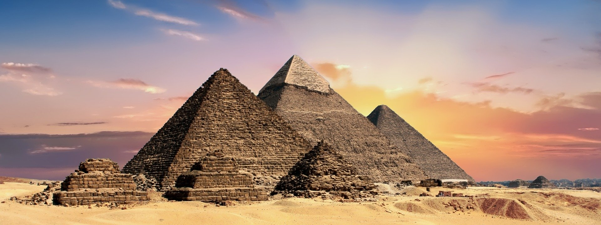

Informacje wstępne
Siedem nowych cudów świata to lista najbardziej znanych budowli z okresu współczesnego ogłoszona 7 lipca 2007 roku na stadionie Estádio da Luz w Lizbonie przez firmę New Open World Corporation (NOWC). Oficjalne głosowanie trwało od 1 stycznia 2006 roku do 6 lipca 2007 roku, podczas którego z 21 finalistów wybrano 7 zwycięzców. Wśród nich znalazły się obiekty z całego świata. Jeden z nich położony jest w Europie, a po trzy w Ameryce Południowej i Azji. Niektórymi z finalistów, którzy nie dostali się do finałowej siódemki są Akropol ateński, Hagia Sofia, Kreml oraz Statua Wolności.
Lista zwycięzców
| Budowla | Lokalizacja |
|---|---|
| Koloseum | Rzym, Włochy |
| Petra | Jordania |
| Tadż Mahal | Agra, Indie |
| Wielki Mur Chiński | Chiny |
| Chichén Itzá | Jukatan, Meksyk |
| Machu Picchu | Cuzco, Peru |
| Statua Chrystusa Zbawiciela | Rio de Janeiro, Brazylia |
Więcej informacji na ten temat (otwiera się w nowej karcie)
Powrót na początek strony
Siedem Cudów Świata Starożytnego
Siedem Cudów Świata Starożytnego - lista najbardziej znanych budowli z okresu starożytności. Wzorowane na niej są inne listy cudów świata. Nawiązuje do nich również pojęcie ósmego cudu świata. Niestety jedynym budynkiem z listy, który przetrwał jest Piramida Cheopsa w Egipcie. Lista budowli:
- Piramida Cheopsa - Egipt
- Wiszące ogrody Semiramidy - Babilon
- Świątynia Artemidy w Efezie - Grecja (obecnie Turcja)
- Posąg Zeusa w Olimpii - Grecja
- Mauzoleum w Halikarnasie - Grecja (obecnie Turcja)
- Kolos Rodyjski - Grecja
- Latarnia morska na Faros - Grecja (obecnie Egipt)
Protest Egiptu
Piramidy w Gizie były jednym z obiektów, które znalazłych się na liście kandydatów do listy 7 cudów świat. Według egipskiego ministra kultury piramidy, które są jedyną ocalałą budowlą z listy Siedmiu Cudów Świata Starożytnego, nie powinny konkurować do rankingu współczesnego. Organizatorzy konkursu uznali decyzję rządu egipskiego i wycofali piramidy z głosowania, które otrzymały status "honorowego cudu".
Powrót na początek strony